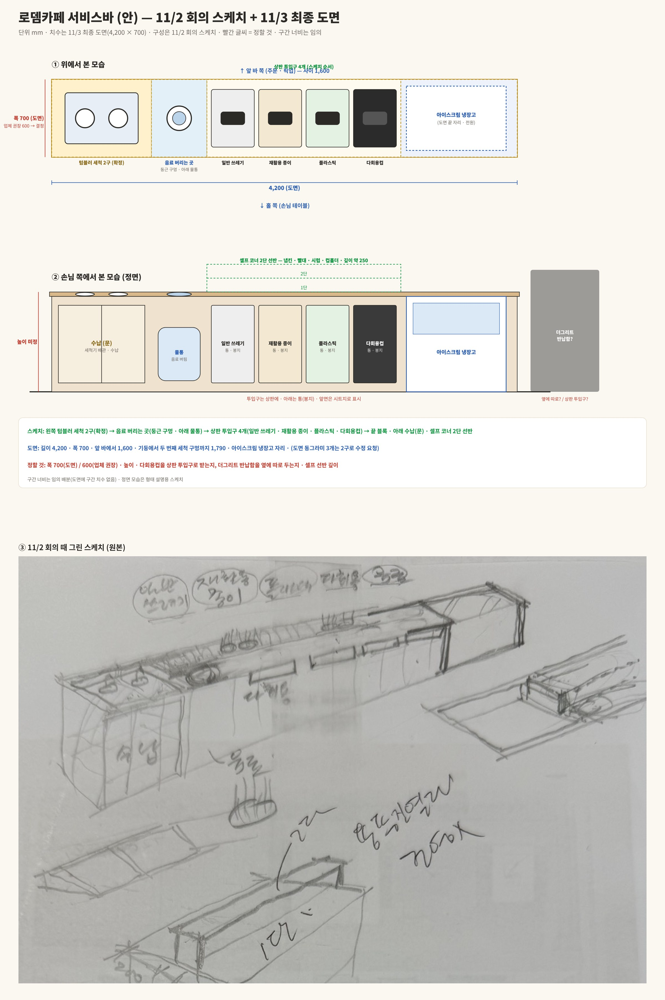
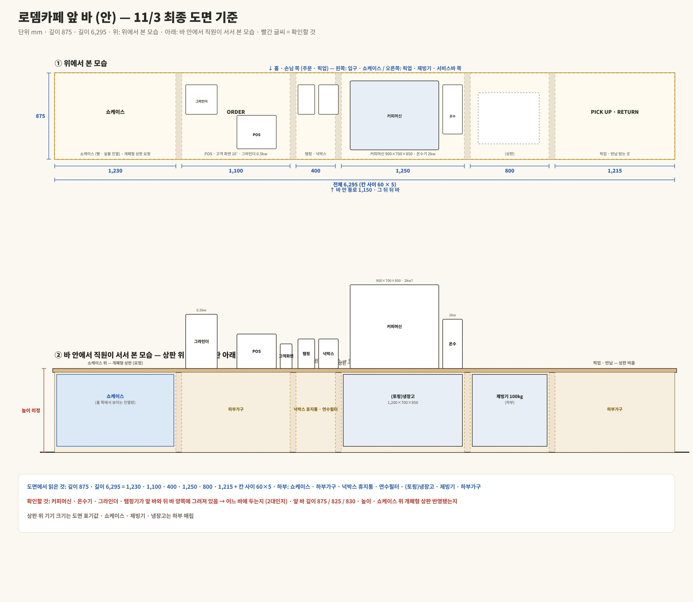
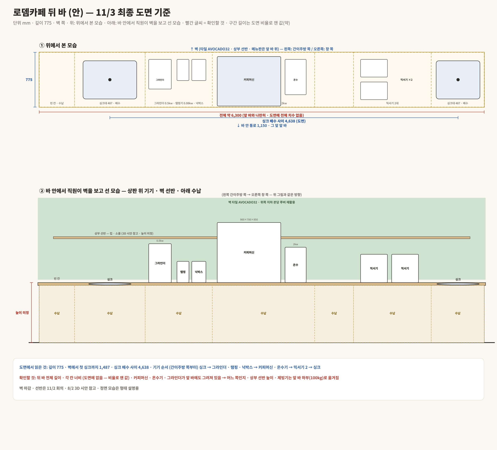
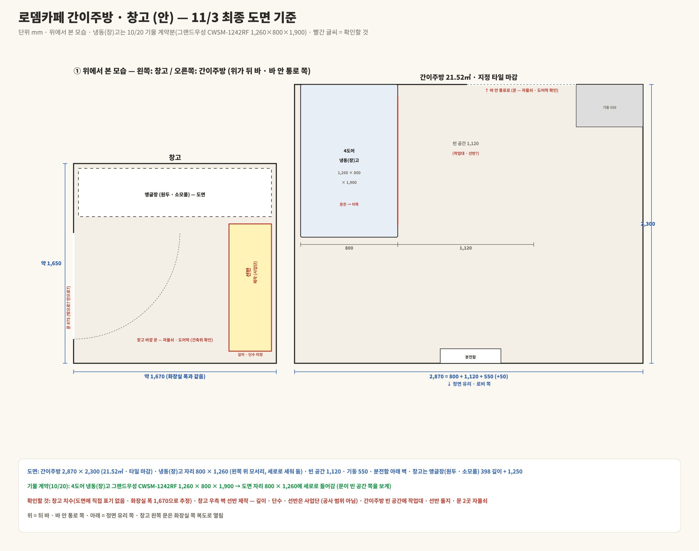

11/3 최종 도면 치수와 11/2 현장 미팅 내용으로 그렸습니다. 파란 글씨는 도면에 적힌 값, 빨간 글씨는 확인할 것입니다. 건축위 · 인테리어 업체와 맞춰 본 뒤 확정합니다.
서비스바4,200 × 700 · 세척 2구 → 음료 버림 → 투입구 4개 → 아이스크림JPG 
정할 것 폭 700(도면) / 600(업체 권장) · 높이 · 다회용컵을 상판 투입구로 받는지, 더그리트 반납함을 옆에 따로 두는지 · 셀프 선반 깊이
앞 바6,295 × 875 · 쇼케이스 → 주문 → 커피 → 제빙기 → 픽업JPG 
확인할 것 커피머신 · 온수기 · 그라인더 · 탬핑기가 앞 바 · 뒤 바 양쪽에 그려져 있음 → 어느 바인지 · 앞 바 깊이 875 / 825 / 830 · 높이 · 쇼케이스 위 개폐형 상판
뒤 바약 6,300 × 775 · 싱크 → 그라인더 → 커피 · 온수 → 믹서기 → 싱크JPG 
확인할 것 전체 길이 · 칸 너비(도면에 없음) · 상부 선반 높이 · 커피머신 위치
간이주방 · 창고2,870 × 2,300 · 냉동(장)고 1,260×800×1,900 · 창고 우측 선반 제작JPG 
확인할 것 창고 치수(화장실 폭 1,670으로 추정) · 선반 깊이 · 단수 · 간이주방 빈 공간 1,120 쓰임 · 문 2곳 자물쇠